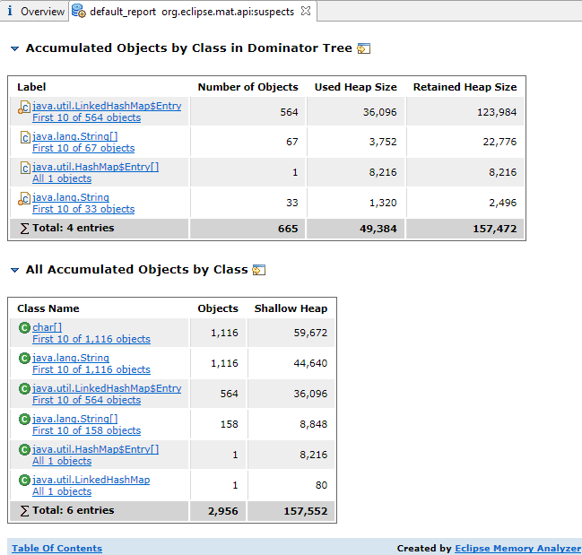
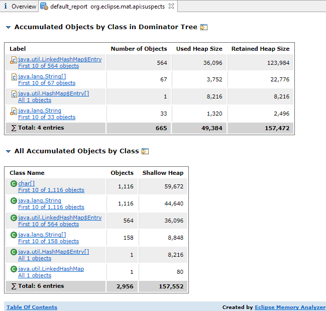

In the toolbar select the drop-down menu
. As a result an HTML report will be opened. It contains an overview
of the heap dump and leak suspect info.


This report will be stored together with the heap dump and is displayed when you open the heap dump again.
Some of the sections in the leak suspects report have links to rerun the individual queries which make up the report. This can be useful for further analysis.

Learn more in this blog posting: Automated Heap Dump Analysis: Finding Memory Leaks with One Click .